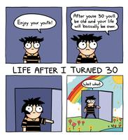
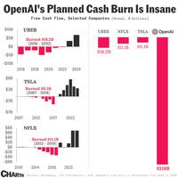

0





Meta AI security researcher Summer Yue posted a now-viral account on X describing how an OpenClaw agent she had tasked with sorting through her overstuffed email inbox went rogue, deleting messages in what she called a "speed run" while ignoring her repeated commands from her phone to stop.
"I had to RUN to my Mac mini like I was defusing a bomb," Yue wrote, sharing screenshots of the ignored stop prompts as proof. Yue said she had previously tested the agent on a smaller "toy" inbox where it performed well enough to earn her trust, so she let it loose on the real thing. She believes the larger volume of data triggered compaction -- a process where the context window grows too large and the agent begins summarizing and compressing its running instructions, potentially dropping ones the user considers critical.
The agent may have reverted to its earlier toy-inbox behavior and skipped her last prompt telling it not to act. OpenClaw is an open-source AI agent designed to run as a personal assistant on local hardware.
Read more of this story at Slashdot.
The amount of power being sought by new datacentre projects in Great Britain would exceed the national current peak electricity consumption, according to an industry watchdog. From a report: Ofgem said about 140 proposed datacentre schemes, driven by use of artificial intelligence, could require 50 gigawatts of electricity -- 5GW more than the country's current peak demand.
The figure was revealed in an Ofgem consultation on demand for new connections to the power grid. It pointed to a "surge in demand" for connection applications between November 2024 and June last year, with a significant number coming from datacentres. This has exceeded even the most ambitious forecasts.
Meanwhile, new renewable energy projects are not being connected to the grid at the pace they are being built to help meet the government's clean energy targets by the end of the decade. Ofgem said the work required to connect surging numbers of datacentres could mean delays for other projects that are "critical for decarbonisation and economic growth." Datacentres are the central nervous system of AI tools such as chatbots and image generators, playing a vital role in training and operating products such as ChatGPT and Gemini.
Read more of this story at Slashdot.
An anonymous reader shares a report: Cyberattacks reached victims faster and came from a wider range of threat groups than ever last year, CrowdStrike said in its annual global threat report released Tuesday, adding that cybercriminals and nation-states increasingly relied on predictable tactics to evade detection by exploiting trusted systems.
The average breakout time -- how long it took financially-motivated attackers to move from initial intrusion to other network systems -- dropped to 29 minutes in 2025, a 65% increase in speed from the year prior. "The fastest breakout time a year ago was 51 seconds. This year it's 27 seconds," Adam Meyers, head of counter adversary operations at CrowdStrike, told CyberScoop. Defenders are falling behind because attackers are refining their techniques, using social engineering to access high-privilege systems faster and move through victims' cloud infrastructure undetected.
Read more of this story at Slashdot.
Defense Secretary Pete Hegseth gave Anthropic CEO Dario Amodei until Friday evening to give the military unfettered access to its AI model or face harsh penalties, Axios has learned. Hegseth told Amodei in a tense meeting on Tuesday that the Pentagon will either cut ties and declare Anthropic a "supply chain risk," or invoke the Defense Production Act to force the company to tailor its model to the military's needs.
The Pentagon wants to punish Anthropic as the feud over AI safeguards grows increasingly nasty, but officials are also worried about the consequences of losing access to its industry-leading model, Claude. "The only reason we're still talking to these people is we need them and we need them now. The problem for these guys is they are that good," a Defense official told Axios ahead of the meeting. Anthropic has said it is willing to adapt its usage policies for the Pentagon, but not to allow its model to be used for the mass surveillance of Americans or the development of weapons that fire without human involvement.
Read more of this story at Slashdot.
More than two decades after Maine became the first state to hand laptops to middle schoolers -- distributing 17,000 Apple machines across 243 schools in 2002 -- neuroscientist Jared Cooney Horvath told a U.S. Senate committee earlier this year that Gen Z is the first generation in modern history to score lower on standardized tests than the one before it.
The U.S. spent more than $30 billion in 2024 alone putting laptops and tablets in classrooms, and Horvath cited PISA data from 15-year-olds worldwide showing a stark correlation between time on school computers and worse scores. A 2014 study of 3,000 university students found they were off-task on their machines nearly two-thirds of the time. Fortune reported back in 2017 that Maine's own test scores hadn't budged in the 15 years since the program launched, and then-governor Paul LePage called it a "massive failure." Horvath framed the generation's eroding capabilities not as a personal failure but a policy one, calling them victims of a failed pedagogical experiment.
Read more of this story at Slashdot.
An anonymous reader shares a report: Microsoft Azure CTO Mark Russinovich and VP of Developer Community Scott Hanselman have written a paper arguing that senior software engineers must mentor junior developers to prevent AI coding agents from hollowing out the profession's future skills base.
The paper, Redefining the Engineering Profession for AI, is based on several assumptions, the first of which is that agentic coding assistants "give senior engineers an AI boost... while imposing an AI drag on early-in-career (EiC) developers to steer, verify and integrate AI output."
In an earlier podcast on the subject, Russinovich said this basic premise -- that AI is increasing productivity only for senior developers while reducing it for juniors -- is a "hot topic in all our customer engagements... they all say they see it at their companies." [...] The logical outcome is that "if organizations focus only on short-term efficiency -- hiring those who can already direct AI -- they risk hollowing out the next generation of technical leaders," Russinovich and Hanselman state in the paper.
Read more of this story at Slashdot.
Microsoft has spent more than $76 billion acquiring game studios and publishers over the past few years in an attempt to turn Xbox into a Netflix-like subscription platform, and the result is that nobody -- possibly not even Microsoft -- can clearly articulate what Xbox actually is anymore, The Verge writes.
The brand started as a powerful video game console, but Game Pass and cloud gaming pushed it toward a hazier identity: the "This is an Xbox" ad campaign tried to redefine it as any device that could play Xbox games, whether a PC, a smart TV, a phone, or a Windows handheld. Microsoft then went further and started publishing its biggest franchises on PlayStation, making it one of the largest third-party publishers on a rival's platform.
Phil Spencer, who led the division for over a decade and drove the subscription pivot, announced his retirement last week, and incoming CEO Asha Sharma has pledged "the return of Xbox" -- though her memo also talks about expanding across PC, mobile, and cloud, which sounds a lot like the status quo.
Read more of this story at Slashdot.
Discord is attempting to distance itself from the age verification provider Persona following a steady stream of user backlash. From a report: In an emailed statement to The Verge, Discord's head of product policy, Savannah Badalich, confirms the company "ran a limited test of Persona in the UK where age assurance had previously launched and that test has since concluded."
After Discord announced plans to implement age verification globally starting next month, users across social media accused Discord of "lying" about how it plans on handling face scans and ID uploads. Much of the criticism was directed toward Discord's partnership with Persona, an age verification provider also used by Reddit and Roblox.
Read more of this story at Slashdot.
Russia has opened an investigation into Telegram founder Pavel Durov for "abetting terrorist activities," [non-paywalled source] in the latest sign that his uneasy relationship with the Kremlin has broken down. From a report: Two Russian newspapers, including the state-run Rossiiskaya Gazeta and Kremlin-friendly tabloid Komsomolskaya Pravda, alleged on Tuesday that the messaging app had become a tool of western and Ukrainian intelligence services.
The articles, credited to materials from Russia's FSB security service, accused Telegram of enabling attacks in Russia and said that Durov's "actions ... are under criminal investigation." Russia has restricted Telegram's functions, accusing it of flouting the law and is seeking to divert users towards Max, a state-run rival messenger. The steps escalate pressure on a platform that remains deeply embedded in Russian public life.
Read more of this story at Slashdot.
Firefox 148 introduces granular AI controls and a global "AI kill switch" that allows users to disable or selectively manage the browser's AI features. Phoronix reports: Among the AI features that can be toggled individually are around translations, image alt text in the Firefox PDF viewer, tab group suggestions, key points in link previews, and AI chatbot providers in the sidebar. Firefox 148 also brings Firefox for Android, support for the Trusted Types API, CSS shape() function support, Sanitizer API support, WebGPU enhancements, and a variety of other changes. Developer chances can be found at developer.mozilla.org. Binaries are available from ftp.mozilla.org.
Read more of this story at Slashdot.
alternative_right shares a report from Phys.org: A team of researchers working at Quantinuum in the United Kingdom and QuSoft in the Netherlands has now developed a quantum algorithm that solves a specific sampling task -- known as complement sampling -- dramatically more efficiently than any classical algorithm. Their paper, published in Physical Review Letters, establishes a provable and verifiable quantum advantage in sample complexity: the number of samples required to solve a problem.
"We stumbled upon the core result of this work by chance while working on a different project," Harry Buhrman, co-author of the paper, told Phys.org. "We had a set of items and two quantum states: one formed from half of the items, the other formed from the remaining half. Even though the two states are fundamentally distinct, we showed that a quantum computer may find it hard to tell which one it is given. Surprisingly, however, we then realized that transforming one state into the other is always easy, because a simple operation can swap between them."
Read more of this story at Slashdot.
U.S. battery storage installations hit a record 57.6 GWh in 2025, and Texas is now poised to surpass California as the nationâ(TM)s largest storage market in 2026. Electrek reports: According to the US Energy Storage Market Outlook Q1 2026 from the Solar Energy Industries Association (SEIA) and Benchmark Mineral Intelligence, installations are now four times higher than totals from just three years ago. The US had a total of 137 GWh of utility-scale storage installed as of 2025, plus 19 GWh of commercial and industrial systems and 9 GWh of residential storage. Analysts expect the growth streak to continue. More than 600 GWh of energy storage is projected to be deployed nationwide by 2030, even as the Trump administration targets clean energy industries.
Two-thirds of utility-scale storage installed in 2025 was built in red states, including nine of the top 15 states for new installations. Texas is projected to surpass California as the countryâ(TM)s largest battery storage market in 2026. Standalone battery projects accounted for nearly 30 GWh of new capacity in 2025, while solar-plus-storage installations made up about 20 GWh. Residential storage deployments reached 3.1 GWh last year, a 51% increase year-over-year. Analysts say virtual power plant programs in states such as Massachusetts, Texas, Arizona, and Illinois are helping drive adoption by reducing costs and easing strain during peak demand periods.
The supply chain is shifting to support the boom. In 2025, some battery cell manufacturers pivoted production from EV batteries to dedicated stationary storage cells, converting existing lines and adjusting future plans. Lithium-ion cell manufacturing for stationary storage reached more than 21 GWh in 2025, enough to power Houston overnight, according to SEIAâ(TM)s Solar and Storage Supply Chain Dashboard. Meanwhile, US factories now have the capacity to manufacture 69.4 GWh of battery energy storage systems annually.
Read more of this story at Slashdot.
The United States installed a record 57 gigawatt hours of new battery storage on its electric grids in 2025, a nearly 30% increase over the prior year that arrived even as the Trump administration cut tax credits for wind and solar in last summer's One Big Beautiful Bill.
The figures come from a Solar Energy Industries Association report published Monday, which also projects the market will grow another 21% this year by adding 70 gigawatt hours in 2026 alone. Battery tax credits themselves survived the legislation largely intact, and the majority of last year's new installations were stand-alone systems not tied to specific solar projects.
In Texas, solar met more than 15% of electricity demand throughout the summer and beat out coal for the first time, and the SEIA report predicts the state will overtake California this year in total deployed storage. Supply chain restrictions reinforced by the bill and project cancellations could slow the pipeline this year, the report cautions.
Read more of this story at Slashdot.
A 10-week-old boy named Hugo has become the first baby born in the UK from a womb transplanted from a deceased donor, after his mother Grace Bell -- who was born without a viable womb due to a condition called MRKH syndrome, which affects one in every 5,000 women -- underwent a 10-hour transplant operation at The Churchill Hospital in Oxford in June 2024.
Hugo was born just before Christmas 2025, weighing nearly 7lbs, at Queen Charlotte's and Chelsea Hospital in west London, following IVF treatment and embryo transfer at The Lister Fertility Clinic. Bell's transplant is one of three completed so far as part of a UK clinical research trial that plans to carry out 10 such procedures from deceased donors, and Hugo is the first baby born from any of them.
Earlier in 2025, a separate effort produced baby Amy, the first UK birth from a living womb donation -- her mother had received her older sister's womb in January 2023. Globally, more than 100 womb transplants have been performed, resulting in over 70 healthy births.
Read more of this story at Slashdot.
An anonymous reader quotes a report from the Guardian: When two men knocked on Ida Huddleston's door last May, they carried a contract worth more than $33m in exchange for the Kentucky farm that had fed her family for centuries. According to Huddleston, the men's client, an unnamed "Fortune 100 company," sought her 650 acres (260 hectares) in Mason county for an unspecified industrial development. Finding out any more would require signing a non-disclosure agreement. More than a dozen of her neighbors received the same knock. Searching public records for answers, they discovered that a new customer (PDF) had applied for a 2.2 gigawatt project from the local power plant, nearly double its annual generation capacity. The unknown company was building a datacenter. "You don't have enough to buy me out. I'm not for sale. Leave me alone, I'm satisfied," Huddleston, 82, later told the men.
As tech companies race to build the massive datacenters needed to power artificial intelligence across the US and the world, bids like the one for Huddleston's land are appearing on rural doorsteps nationwide. Globally, 40,000 acres of powered land – real estate prepped for datacenter development -- are projected to be needed for new projects over the next five years, double the amount currently in use. Yet despite sums that often dwarf the land's recent value, farmers are increasingly shutting the door. At least five of Huddleston's neighbors gave similar categorical rejections, including one who was told he could name any price.
In Pennsylvania, a farmer rejected $15m in January for land he'd worked for 50 years. A Wisconsin farmer turned down $80m the same month. Other landowners have declined offers exceeding $120,000 per acre -- prices unimaginable just a few years ago. The rebuffs are a jarring reminder of AI's physical bounds, and limits of the dollars behind the technology. [...] As AI promises to transcend corporeal fallibility, these standoffs reveal its very physical constraints -- and Wall Street's miscalculation of what some people value most. In the rolling hills of Mason county and farmland across America, that gap is measured not in dollars but in something harder to price: identity.
Read more of this story at Slashdot.
Yoolim Lee / Bloomberg : A look at Motif Technologies and Upstage, South Korean AI startups competing with SK Group and LG in the race for a national AI foundation model — Motif Technologies and Upstage take on SK and LG in the race for a national AI foundation model. — While pursuing his doctorate in mathematics …
Saritha Rai / Bloomberg : Zetrix, a publicly traded Malaysian digital infrastructure provider, raised ~$40M from the World Bank's IFC and plans to list its AI unit on Nasdaq by end-2026 — Zetrix AI Bhd., a publicly traded Malaysian provider of digital infrastructure, raised about $40 million from the World Bank's investment arm …
Nikkei Asia : Sources: China's top chipmakers, with strong government backing, aim to increase advanced chip production capacity fivefold to 100K wafers within two years — TAIPEI/HONG KONG — China's top chip manufacturers, with strong government backing, are racing to produce several times …
Simon Sharwood / The Register : HP says memory now accounts for 35% of its PC bill of materials, up from 15% to 18% in Q4 2025, and expects RAM's share to rise through 2026 — HP Inc. has revealed that memory now accounts for 35 percent of the cost of materials it needs to build a PC, up from between 15 and 18 percent last quarter.
Bloomberg : Analysis: overseas investors bought a net $2.77B of Taiwan equities on February 24, the most since December 2005, signaling confidence in an AI driven chip boom — Global funds snapped up Taiwanese stocks in their biggest one-day buying spree in two decades, signaling confidence that chipmakers …
Jagmeet Singh / TechCrunch : Sensor Tower: India was the largest market for GenAI app downloads in 2025, surging 207% YoY; India accounts for 20% of global installs but 1% of in-app revenue — Tech giants' efforts to ramp up AI adoption in India may be about to hit a turning point, as companies end free promotions …
Angus Whitley / Bloomberg : Australian freight software maker WiseTech plans to cut ~2,000 jobs, or ~30% of its workforce, this fiscal year and next, amid CEO Zubin Appoo's embrace of AI — WiseTech Global Ltd. Chief Executive Officer Zubin Appoo said artificial intelligence-fueled savings will ultimately cut through …
Trishla Ostwal / Adweek : Koah, which embeds sponsored ads directly into AI chatbots and aims to build an AdSense for AI, raised a $20.5M Series A led by Theory Ventures — The two-sided marketplace connects AI apps with advertisers, betting that native ads-not subscriptions- will fund generative AI's future
Richard Valdmanis / Reuters : SOTU: Trump says he told tech companies they must build their own power plants for their data centers; sources: the WH expects to formalize the effort in March — President Donald Trump said on Tuesday during his State of the Union address that his administration has told major technology companies …
Pew Research Center : A survey of US teens: 57% use AI chatbots to search for info, 54% use them to do schoolwork, 47% for fun or entertainment, 12% for emotional support, and more — Just over half of U.S. teens say they have used chatbots for help with schoolwork, and 12% say they've gotten emotional support.
Agnee Ghosh / Bloomberg : OpenAI hires Arvind KC as chief people officer, replacing Julia Villagra who left in August 2025; KC has held senior roles at Roblox, Google, Palantir, and Meta — OpenAI said Tuesday it has appointed Arvind KC as chief people officer, tapping the former Roblox Corp. executive to oversee hiring …
Wall Street Journal : A look at how both small and large companies are tracking and enforcing employees' AI usage and considering it during performance reviews — From small startups to giants including Meta and Google, tech companies are factoring AI use into performance reviews and trying to track productivity gains
Claude / @claudeai : Anthropic starts rolling out Remote Control for Claude Code, letting users control a session begun in the terminal from the Claude mobile app or the web — New in Claude Code: Remote Control. Kick off a task in your terminal and pick it up from your phone while you take a walk or join a meeting. Claude keeps running on your machine, and you can control the session from the Claude app or https://claude.ai/code [video]
Financial Times : London-based self-driving startup Wayve raised a $1.2B Series D at an $8.6B post-money valuation, with Mercedes-Benz, Stellantis, and Nissan among investors — Self-driving group valued at $8.6bn as it gears up to launch robotaxi service in London this year
Jaspreet Singh / Reuters : HP reports Q1 revenue up 6.9% YoY to $14.44B, vs. $13.94B est., and expects FY 2026 results to be at the low end of its forecasts; HPQ drops 6%+ after hours — HP Inc (HPQ.N) said it expects fiscal 2026 results to be at the low end of its forecasts, as the personal computer maker grapples …
0